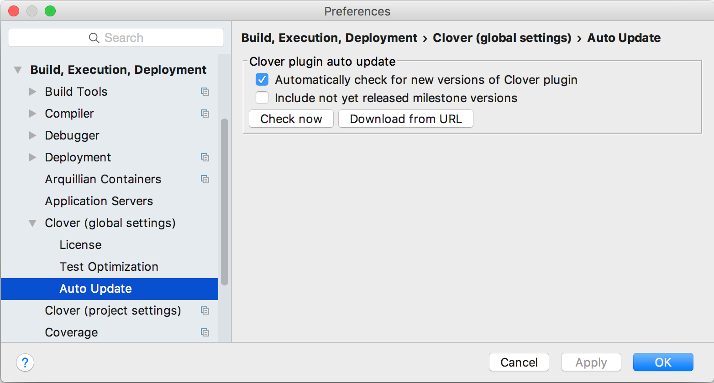
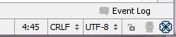
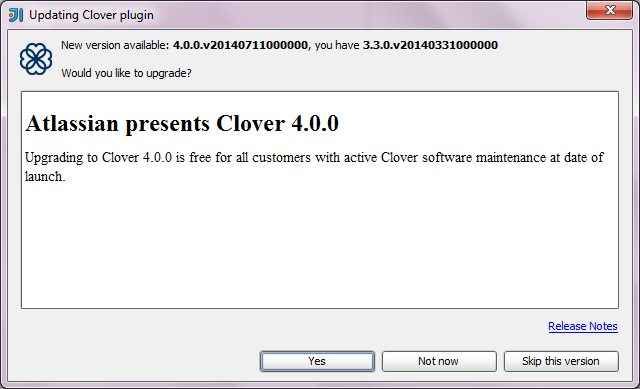

Clover-for-IDEA can check whether a newer version of the application is available with its 'Auto Update' feature.
To configure this setting in IDEA, open File > Settings (Linux, Windows) or IDEA > Preferences (OS X) dialog. Next open the Build, Execution, Deployment (IDEA 14 or newer) or IDE Settings group (IDEA 13 or older). Next open the Clover > Auto Update page.
You can select the option 'Automatically check for new versions of Clover plugin'. Another setting, 'Include not yet released milestone versions' allows you to see information about upcoming releases of Clover-for-IDEA. Once configured, the plugin will do a daily check for a new version of the program.
You can check for the newest version by clicking 'Check now'. You can also update the program from a specific location by clicking 'Download from URL'.

When an update to Clover-for-IDEA is available, a Clover icon appears on the IDEA status bar:

You can click this icon, which will produce a dialog window showing new version information. You can also choose to upgrade Clover-for-IDEA directly from that window.
